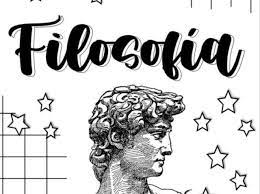

FILOSOFIA
PROF. Darli de Fatima Sampaio
[Textos sobre as aulas]

Sobre Clemente Juliatto_cartas:
Sobre o Byung Chul Han
Sobre o KANT e Immanuel
Aqui em cima você pode abaixar os PDF que foram utilizados nas aulas.

Aqui em cima você pode abaixar os PDF que foram utilizados nas aulas.